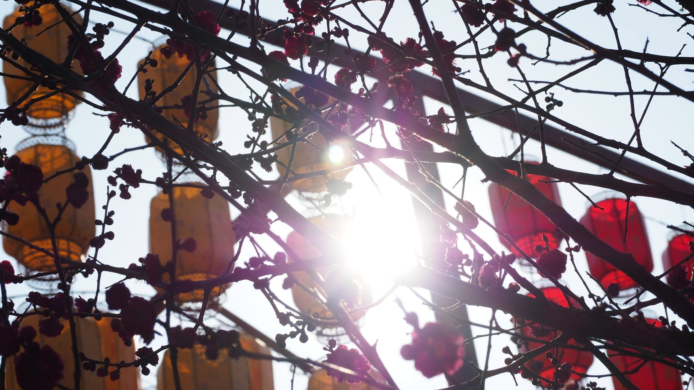
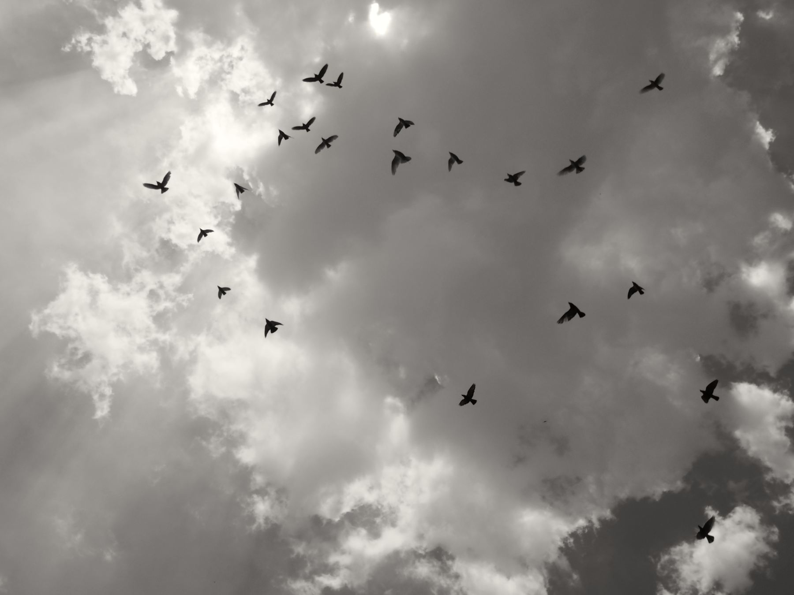

01
2023.03
江南 · 园林
第一组园林照片，是在等一场不会来的雨。
三月的江南多雨，我从第一次带相机出门起就在等雨。那天雨一直没下，我就一直坐在廊下看光线从砖地移到假山上。
后来我明白，等不到雨的时候才是最好的部分——没有戏剧性，只有缓慢移动的影子。
这一组照片大多是这样来的：没有事件，只有时间。

Notes from the field · 2023—2026
三月的江南多雨，我从第一次带相机出门起就在等雨。那天雨一直没下，我就一直坐在廊下看光线从砖地移到假山上。
后来我明白，等不到雨的时候才是最好的部分——没有戏剧性，只有缓慢移动的影子。
这一组照片大多是这样来的：没有事件，只有时间。
庙会只有三天。我连去三天，第三天把相机挂在了腰上，几乎没有举起来——那些逆光的画面，靠的是站的位置，不是技巧。
夜里十一点，人开始散，灯还亮着。那一刻的画面比白天好，因为没有人再挡光。

有一晚下过雨之后，我在便利店门口站了很久，最后只拍了一张水面上的灯光倒影。
那张照片后来成了「街」系列的封面。它提醒我：最像一座城市的，未必是它的建筑。

屋脊上的鸟群是我一整年反复拍的题材。开始我拍它们飞的样子，后来才拍到它们停下来的样子。
停下来才是更难的那一张。

出发前两周才开始研究航拍规则，落地后才发现大多数地方根本不能飞。
于是那八天里，大部分照片还是在地面上拍的——这反而更像我习惯的方式。
唯一一次飞起来是在海边，风很大，飞机差点没回来。

原本要坐的那班飞机晚点了四个小时，我在候机楼的窗边拍下了云层。
后来整理照片时发现，这张在地面拍的云，比我在高空拍的所有海面都好。